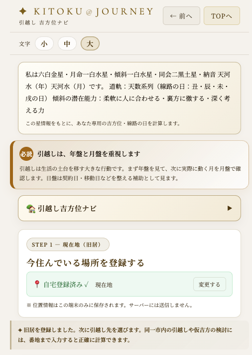
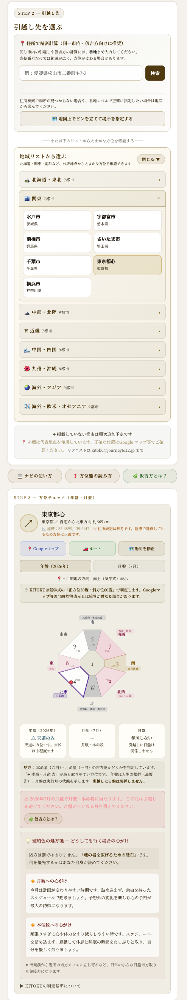
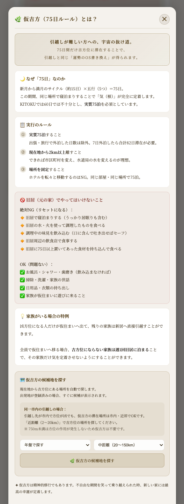
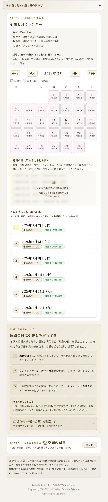

転職・引越し・開業の
タイミングを見極める
引越し・転職・開業。人生の大きな決断ほど、「いつ・どちらへ動くか」が後々まで効いてきます。重い決断には、日々の吉方取りとは違う盤の選び方があります。
大きな決断のタイミングを、焦らず見極めるための回です。良い時期を選べる時は選び、選べない時の手当ても知っておく。それだけで一歩が軽くなります。
行動の重さで、使う盤が変わる
方位盤には、年盤・月盤・日盤があります。大切なのは、全部を同じ重さで見ることではなく、行動の重さに合わせて使う盤を選ぶことです。
| 行動の重さ | 使う盤 | 例 |
|---|---|---|
| 人生を左右する重い決断 | 年盤＋月盤 | 引越し・転職・開業・結婚 |
| 中期・実際に動く月 | 月盤 | 通勤通学（1年以上）・数週間の移動 |
| 日々の軽い行動 | 日盤 | 今日の外出・買い物 |
06で学んだ日々の吉方取りは日盤の話。引越しや転職のような重い決断は、もっと大きな盤、年盤と月盤で見ます。

引越し・転職・開業は「年盤＋月盤」
引越しは、住む場所という人生の土台を移す行動です。転職や開業も、収入や社会での立ち位置に大きく関わります。そのため、年盤と月盤の両方を見ます。

アプリが年盤・月盤を自動で判定します。最初は「今年その方角へ動いてよいか」を見るだけでも、判断が整理されます。
近距離と、行けない時の手当て
自宅から750m以内への引越しは、方位作用が発生しないと考えます。この場合は、方位よりも家相や間取り、住まいの整え方を見ます。
転勤・家庭の事情で、理想の方角に行けない時もあります。その時の迂回法が「仮吉方（75日ルール）」です。
一度、別の吉方向の仮住まいに移り75日以上暮らし、そこを起点に新居へ吉方で入ります。細かい条件はアプリの解説で確認してください。
引越しが難しい時は「空間の調律」で今の家を整える方法もあります。道は一つではありません。

契約・開業日は「線路の日」
引越しのような移動ではなく、契約・口座開設・開業・新しい物の使い始めなど、移動を伴わない開始には「線路の日」を選びます。始めたことが長く伸びやすい日です。
| 本命星 | 系列 | 線路の日 |
|---|---|---|
| 1・4・7 | 人数系列 | 子・卯・午・酉 |
| 3・6・9 | 天数系列 | 丑・辰・未・戌 |
| 2・5・8 | 地数系列 | 寅・巳・申・亥 |
六白金星（6）の線路の日は、丑・辰・未・戌です。数字6は天数系列（3・6・9）に入ります。

自分でも調べられる。楽に見ることもできる。
線路の日の考え方は、KITOKUに閉じ込めるものではありません。自分の線路の十二支を知っていれば、暦アプリや万年暦でも確認できます。
プレミアムでは、線路の日カレンダーで候補日を一覧表示します。計算の手間を省きたい方向けです。
タイミングは「完璧でなければ動けない」ものではありません。良い時期を選べる時は選び、事情が許さない時は手当てをする。最後に動くと決めるのは、いつもあなたです。